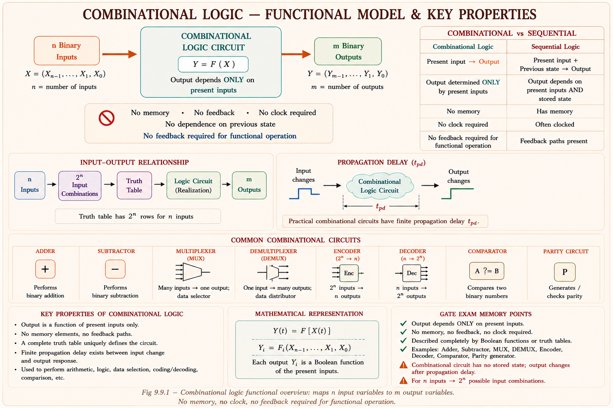
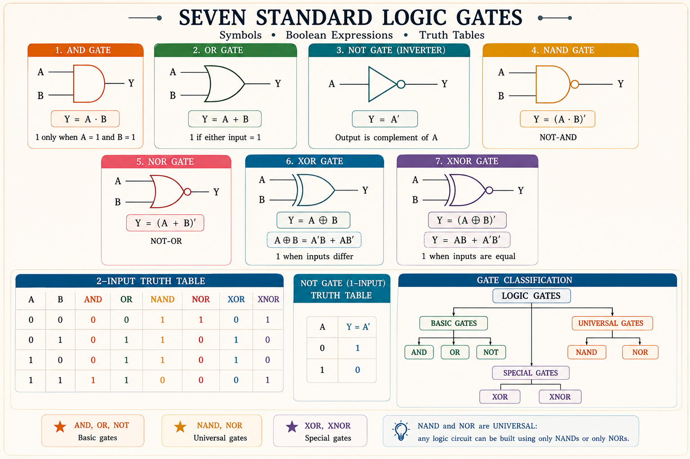
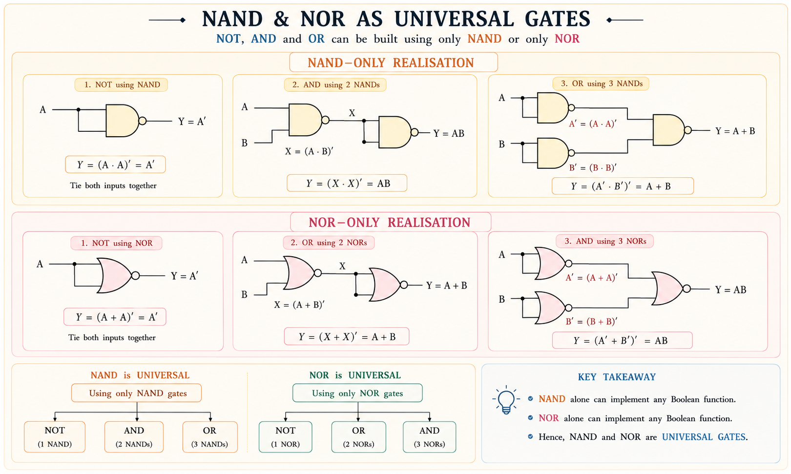
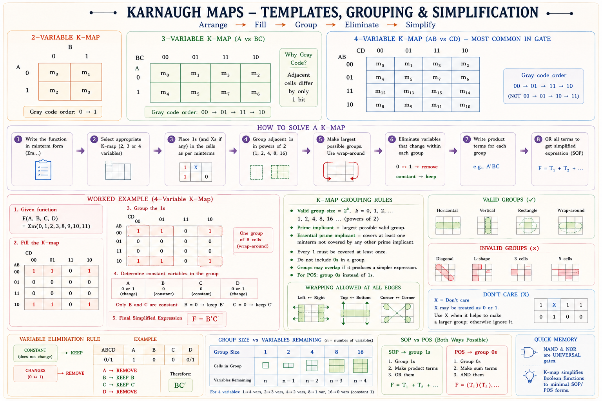
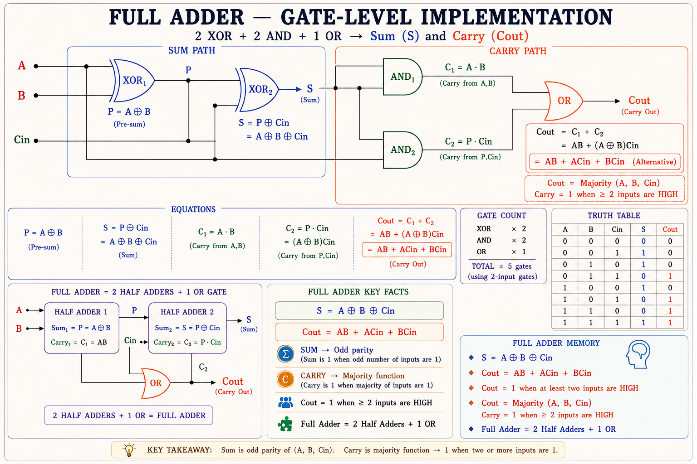
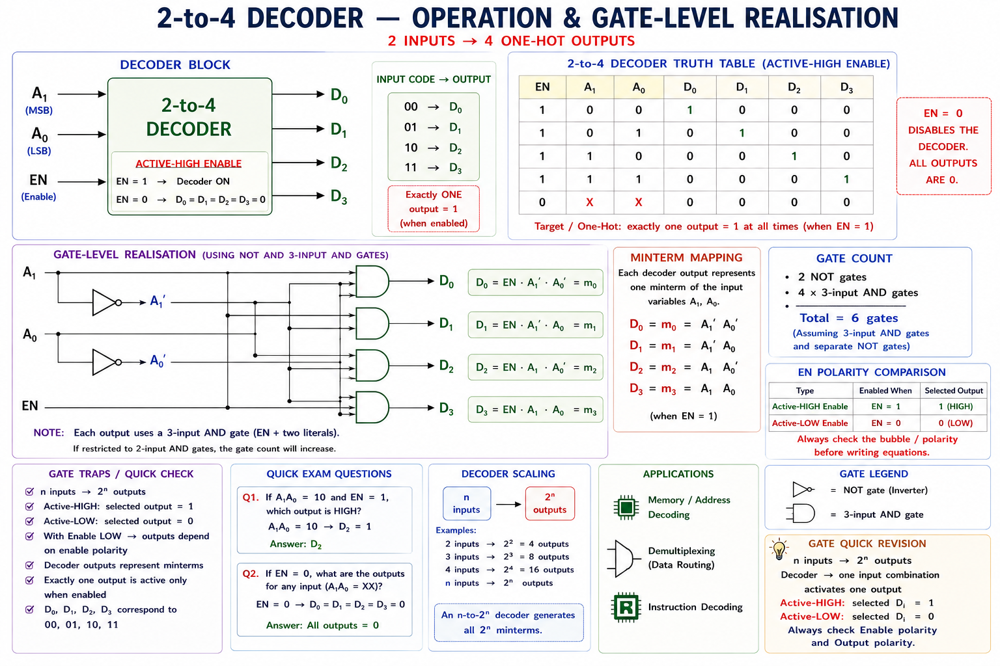
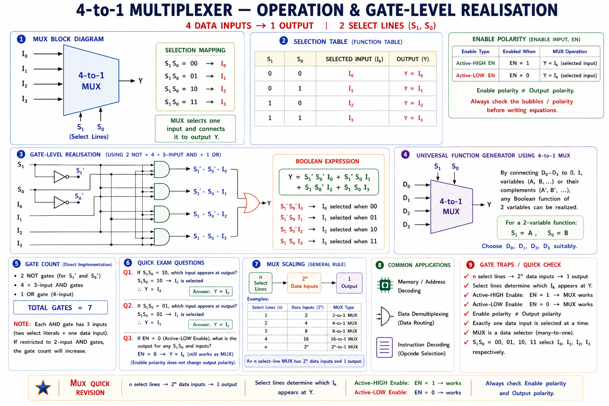

Logic gates, Boolean algebra, Karnaugh maps, adders, subtractors, encoders, decoders, multiplexers and demultiplexers — complete GATE, IES and PSU coverage with full derivations, SVG diagrams, solved examples and memory tricks.
Every digital system — from a smartphone processor to an industrial PLC — makes decisions using logic. The heart of that decision-making is the combinational logic circuit: a network whose output at any instant depends only on the current inputs, with no memory of past states.[1]
A combinational circuit has no feedback, no clock, no flip-flops. Output = f(inputs right now). A sequential circuit has memory — output depends on inputs AND past history. This chapter covers combinational only. Sequential (flip-flops, counters, registers) comes next.

A logic gate is the fundamental building block of all digital circuits. It accepts one or more binary inputs (0 or 1) and produces a single binary output according to a fixed Boolean rule.[1] All seven standard gates and their truth tables are given below.

NAND and NOR are called universal gates because any Boolean function — and therefore any digital circuit — can be built using ONLY NAND gates or ONLY NOR gates.[2] This is critical for VLSI design where a single gate type on a chip is far cheaper to fabricate.

XOR is often tested with identities: \(A \oplus 0 = A\), \(A \oplus 1 = A'\), \(A \oplus A = 0\), \(A \oplus A' = 1\). Also: XOR is commutative and associative. A multi-input XOR gives 1 if an odd number of inputs are 1 — used in parity generators.
| Gate | Expression | Identity | Null | Complement | GATE Importance |
|---|---|---|---|---|---|
| AND | \( Y = A \cdot B \) | \( A \cdot 1 = A \) | \( A \cdot 0 = 0 \) | \( A \cdot A' = 0 \) | 🟢 Very High |
| OR | \( Y = A + B \) | \( A + 0 = A \) | \( A + 1 = 1 \) | \( A + A' = 1 \) | 🟢 Very High |
| NOT | \( Y = A' \) | \( (A')' = A \) | — | — | 🟢 High |
| NAND | \( Y = (A \cdot B)' \) | Universal | \( (A \cdot 0)' = 1 \) | \( \text{NAND}(A,A) = A' \) | 🟢 Very High |
| NOR | \( Y = (A + B)' \) | Universal | \( (A + 1)' = 0 \) | \( \text{NOR}(A,A) = A' \) | 🟢 Very High |
| XOR | \( Y = A \oplus B \) | \( A \oplus 0 = A \) | \( A \oplus 1 = A' \) | \( A \oplus A = 0 \) | 🟢 High |
| XNOR | \( Y = (A \oplus B)' \) | \( A \odot 0 = A' \) | \( A \odot 1 = A \) | \( A \odot A = 1 \) | 🟡 Medium |
Boolean algebra, introduced by George Boole in 1854 and applied to switching circuits by Claude Shannon in 1938, provides the mathematical framework for analysing and simplifying logic circuits.[1] It operates on variables that take only two values: 0 and 1.
| # | Theorem | AND form | OR form |
|---|---|---|---|
| T1 | Idempotent | \( A \cdot A = A \) | \( A + A = A \) |
| T2 | Null / Annihilator | \( A \cdot 0 = 0 \) | \( A + 1 = 1 \) |
| T3 | Absorption | \( A(A+B) = A \) | \( A + AB = A \) |
| T4 | Involution | \( (A')' = A \) | |
| T5 | De Morgan's | \( (AB)' = A' + B' \) | \( (A+B)' = A'B' \) |
| T6 | Consensus | \( AB + A'C + BC = AB + A'C \) | \( (A+B)(A'+C)(B+C) = (A+B)(A'+C) \) |
Rule 1: To complement a product term, complement each variable and change AND to
OR: \(\overline{AB} = \bar{A} + \bar{B}\)
Rule 2: To complement a sum term, complement each variable and change OR to
AND: \(\overline{A+B} = \bar{A} \cdot \bar{B}\)
Practical use: Bubble-pushing in gate diagrams. A NAND gate is equivalent to an
OR gate with inverted inputs. A NOR gate is equivalent to an AND gate with inverted inputs.
Any Boolean expression can be written in two canonical forms:[2]
Minterm (m): small — where function = 1, variable is uncomplemented if its bit is 1. Think "1 = uncomplemented." Maxterm (M): big — where function = 0, variable is uncomplemented if its bit is 0. The minterms and maxterms of the same function are complementary: \(\sum m = \prod M\).
A Karnaugh map (K-map) is a visual method devised by Maurice Karnaugh in 1953 to simplify Boolean expressions by grouping adjacent minterms that differ in exactly one variable (Gray code adjacency).[3] It is the fastest manual simplification tool for up to 5–6 variables.
When two adjacent cells in a K-map differ by exactly one variable, that variable can be eliminated: \(AB + AB' = A(B + B') = A\). Grouping 2 cells eliminates 1 variable; 4 cells eliminate 2; 8 cells eliminate 3 — each doubling halves the remaining literals.

Step 1 — Plot minterms: Place 1s at cells 0,1,2,3 (top row) and 8,9,10,11 (bottom row).
Step 2 — Find groups: The 8 cells (0,1,2,3,8,9,10,11) form one large group of 8 by wrapping top↔bottom (toroidal adjacency).
Step 3 — Read the group: Group of 8 in a 4-variable map eliminates 3 variables. Which variable is constant? Checking: A=0 in top row, A=1 in bottom row — A varies. B=0 and B=1 in the group — B varies. C=0 in columns 00,10; C=1 in columns 01,11 — C varies. D: columns 00,01,10,11 appear — D varies too. Wait — only the two rows where AB = 00 (top) or AB = 10 (bottom) are included. B=0 in both rows (AB=00 and AB=10). So B=0 is constant throughout!
Verification: When B=0, regardless of A, C, D, F=1. Minterms with B=0: 0,1,2,3,8,9,10,11. ✓ Matches the given set.
Mistake 1: Using groups of 3, 5, 6, or 7 — INVALID. Only powers of 2
allowed.
Mistake 2: Forgetting that the map wraps. Cells 0,4,12,8 form a valid group of
4 (first column wraps with no issue, but also top row wraps with bottom row).
Mistake 3: Not using don't-cares to enlarge groups — you miss simplification
opportunities.
Mistake 4: POS from K-map: group the zeros, not the ones, and then
complement each variable in the reading.
Adders are the arithmetic core of every ALU, DSP processor, and floating-point unit. Understanding them at the gate level is essential for GATE and IES.[1]
A half adder adds two 1-bit numbers and produces a Sum and a Carry. It cannot account for an incoming carry — hence "half."
A full adder adds three 1-bit inputs: A, B, and an incoming carry \(C_{in}\). This makes it cascadable for multi-bit addition.[1]

Cascading n full adders produces an n-bit ripple carry adder, but carry must propagate through all stages, giving worst-case delay of \(2n \cdot t_g\) where \(t_g\) is gate delay. The carry lookahead adder computes all carries simultaneously using generate and propagate signals.[4]
| Circuit | Difference | Borrow out | Gate implementation |
|---|---|---|---|
| Half Subtractor | \(D = A \oplus B\) | \(B_{out} = A' \cdot B\) | 1 XOR + 1 AND (with NOT on A) |
| Full Subtractor | \(D = A \oplus B \oplus B_{in}\) | \(B_{out} = A'B + A'B_{in} + BB_{in}\) | 2 XOR + 3 AND + 1 OR + 1 NOT |
In practice, subtraction A − B is performed by computing A + (2's complement of B) = A + B̄ + 1. The same adder hardware is reused. A controlled inverter (XOR with control line) converts B to B̄ when the control is 1; the carry-in is set to 1. This is how real ALUs work — one adder does both addition and subtraction.
A decoder converts a binary-coded input (n lines) into a one-hot output (up to \(2^n\) lines). Exactly one output is active at a time.[1]

An n-to-2ⁿ decoder with an enable AND OR gates at the output can implement any combinational function. For a 3-variable function, use a 3-to-8 decoder: connect the desired minterm outputs to an OR gate. This is an implementation technique — GATE asks this frequently.
An encoder is the inverse of a decoder: it converts one-hot (2ⁿ lines) to binary code (n lines). A priority encoder handles multiple simultaneous inputs by responding to the highest-priority (usually highest-numbered) active input.[2]
| Input (active) | A₁ (MSB) | A₀ (LSB) | Valid (V) |
|---|---|---|---|
| None | 0 | 0 | 0 |
| I₀ only | 0 | 0 | 1 |
| I₁ (or I₁,I₀) | 0 | 1 | 1 |
| I₂ (highest) | 1 | 0 | 1 |
| I₃ (highest) | 1 | 1 | 1 |
Priority encoder equations: \(A_1 = I_3 + I_2\), \(A_0 = I_3 + I_2'I_1\), \(V = I_3 + I_2 + I_1 + I_0\). The Valid output indicates at least one input is active.
A multiplexer (data selector) routes one of \(2^n\) data inputs to a single output, selected by n select lines.[1] It is both a data routing device and a universal logic element.

To implement \(F(A,B,C)\) using a 4-to-1 MUX (instead of an 8-to-1): Apply A, B to select lines. For each combination of A,B, F becomes a function of C alone. Substitute: if F=0 → connect 0; if F=1 → connect 1; if F=C → connect C; if F=C' → connect C'. This halves the MUX size needed — frequently tested in GATE.
A demultiplexer is the inverse of a MUX: it routes one input to one of \(2^n\) outputs, selected by n select lines. A 1-to-4 DEMUX with Enable is identical to a 2-to-4 decoder in hardware — the data input acts as Enable.[2]
| Device | Inputs | Outputs | Function | Key Application |
|---|---|---|---|---|
| Decoder | n binary | 2ⁿ one-hot | Binary to one-hot | Memory address decode |
| Encoder | 2ⁿ one-hot | n binary | One-hot to binary | Keyboard priority encoder |
| MUX | 2ⁿ data + n select | 1 | Data selection / routing | ALU input selection |
| DEMUX | 1 data + n select | 2ⁿ | Data distribution | Serial-to-parallel conversion |
Explanation: NAND (and NOR) are universal gates because any Boolean function can be implemented using only NAND gates. AND, OR, NOT can all be derived from NAND. XOR and AND/OR alone cannot implement every function without the other types.
Explanation: Apply De Morgan: \(Y = AB + CD = \overline{\overline{AB} \cdot \overline{CD}}\). This requires: NAND(A,B) = \(\overline{AB}\); NAND(C,D) = \(\overline{CD}\); final NAND(\(\overline{AB}\), \(\overline{CD}\)) = Y. Total = 3 NAND gates. Wait — the standard 4-NAND form is used when no simplification: NAND1(A,B), NAND2(C,D), NAND3(output of NAND1, NAND2) — but that's 3. If the answer choices say 4, it may include an inverter stage. Always check if the output of the third NAND equals the desired function.
Explanation: Select lines S₁S₀ = 10 (binary) = 2 (decimal). A 4-to-1 MUX selects input \(I_{S_1 S_0}\). So S₁=1, S₀=0 → selects I₂.
Answer: First half adder takes inputs A, B. Its outputs are: Sum₁ = A⊕B, Carry₁ = AB. Second half adder takes inputs Sum₁ = A⊕B and Cin. Its outputs are: Sum₂ = A⊕B⊕Cin (this is the final Sum S), Carry₂ = (A⊕B)·Cin. The OR gate combines: Cout = Carry₁ + Carry₂ = AB + (A⊕B)·Cin. This is the complete full adder implementation.
Explanation: All minterms 0,2,4,6,8,10,12,14 have D=0 (even numbers in 4-bit binary have LSB=0, i.e., D=0). Plotting on K-map: all 8 cells in the D=0 column. Group of 8 → eliminates A, B, C, leaving only D=0 → F = D'.
Have a doubt? Ask anything about logic gates, Boolean algebra, K-maps, adders, MUX/DEMUX. Get a GATE-focused explanation instantly.
AND, OR, NOT: basic. NAND, NOR: universal (build everything). XOR: detects odd 1s, used in adders/parity. XNOR: equality detector. De Morgan's is critical.
Postulates, De Morgan's, Absorption, Consensus theorems. SOP from 1s in truth table; POS from 0s. Minterm = SOP term; Maxterm = POS term.
Gray code order. Groups of 1/2/4/8 cells. Wrap edges. Largest groups → fewest literals. Don't-cares extend groups. 4-variable K-map most common in GATE.
Half adder: Sum=XOR, C=AND. Full adder: Sum=A⊕B⊕Cin, Cout=AB+Cin(A⊕B). FA = 2 HA + OR = 9 NANDs. CLA: O(1) using Generate/Propagate signals.
Decoder: binary → one-hot, implements minterms. Encoder: one-hot → binary. Priority encoder: highest-active-input wins. 3-to-8 decoder = 8 minterm generator.
2ⁿ-to-1 MUX implements any n-variable function. 2ⁿ⁻¹-to-1 MUX also works with complement. DEMUX = Decoder with Enable. MUX used in ALU data path selection.
Gates: \( \text{AND}=A \cdot B \) | \( \text{OR}=A+B \) | \( \text{NOT}=A' \) |
\( \text{NAND}=(A \cdot B)' \) | \( \text{NOR}=(A+B)' \) | \( \text{XOR}=A \oplus B \) | \(
\text{XNOR}=(A \oplus B)' \)
De Morgan: \( (AB)' = A'+B' \) | \( (A+B)' = A'B' \)
XOR identities: \( A \oplus 0=A \) | \( A \oplus 1=A' \) | \( A \oplus A=0 \) |
\( A \oplus A'=1 \)
Absorption: \( A+AB=A \) | \( A(A+B)=A \)
Half Adder: \( S=A \oplus B, C=AB \) | Full Adder:
\( S=A \oplus B \oplus C_{in}, C_{out}=AB+C_{in}(A \oplus B) \)
K-map: Group sizes: 1, 2, 4, 8, 16. n variables → \( 2^n \) cells. Gray code
columns. Wrap edges.
Decoder: n inputs → \( 2^n \) outputs (minterms) |
Encoder: \( 2^n \) inputs → n outputs
MUX: \( 2^n \) data + n select → 1 output | DEMUX:
1 input + n select → \( 2^n \) outputs
Universal gates: NAND alone, NOR alone — each can build any circuit
NOT from NAND: tie both inputs | AND from NAND: NAND then NAND
again (tied)
OR from NAND: NAND each input separately, then NAND the results
FA from NAND: 9 NAND gates total
CLA: \( G_i=A_i B_i \) (generate), \( P_i=A_i \oplus B_i \) (propagate) → all
carries parallel, O(1) delay
Sequential Logic Circuits — SR, JK, D and T Flip-Flops, Master-Slave configurations, Registers, Shift Registers, Counters (synchronous and asynchronous), State machines, Timing diagrams, Mealy and Moore models — complete GATE and IES coverage.
All technical content is derived from the following standard textbooks. All explanations, derivations, diagrams and examples are original to Aarova AI.